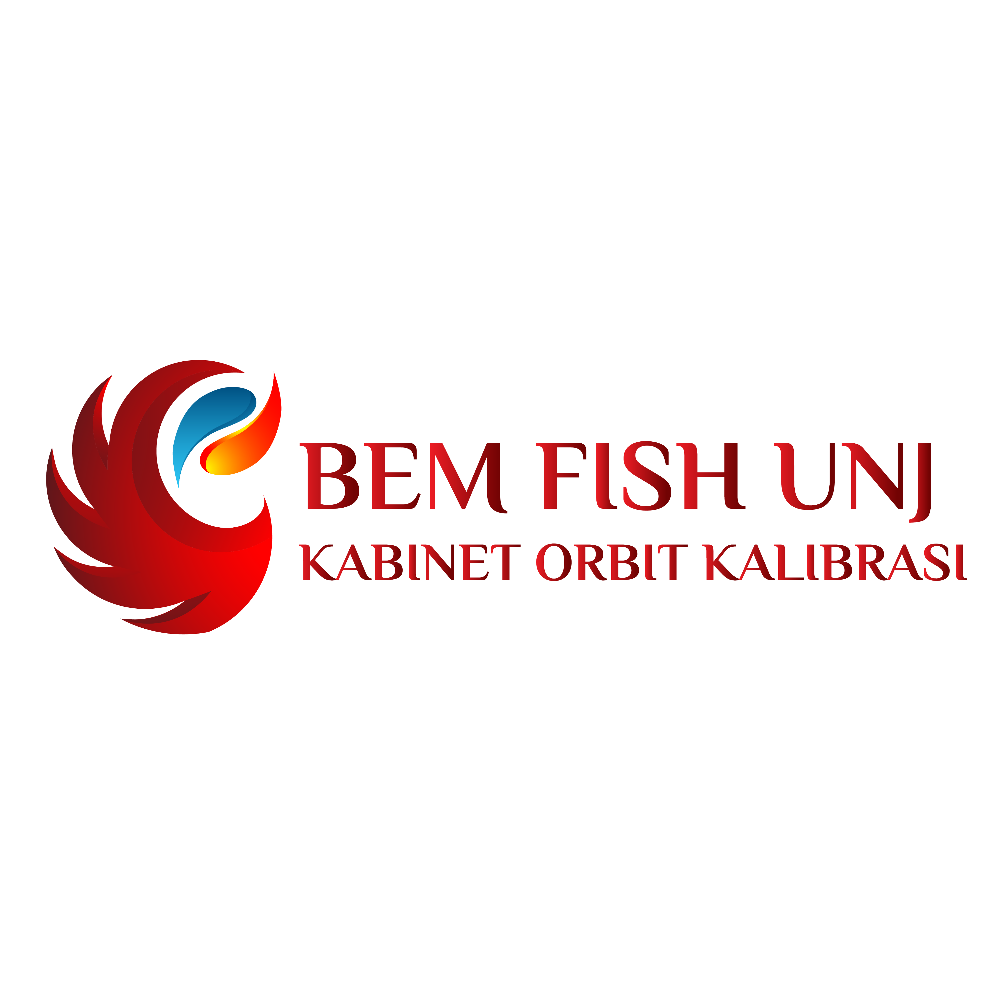
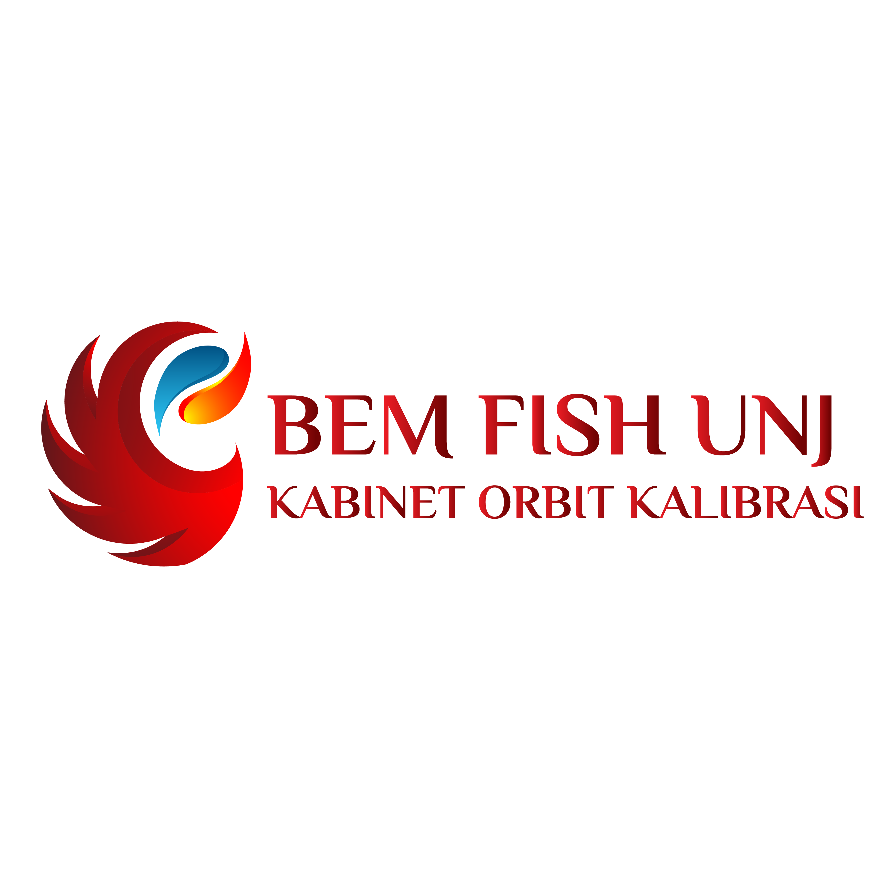
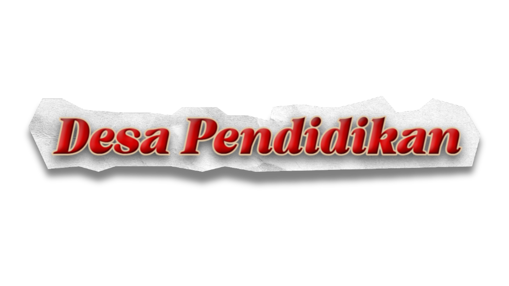
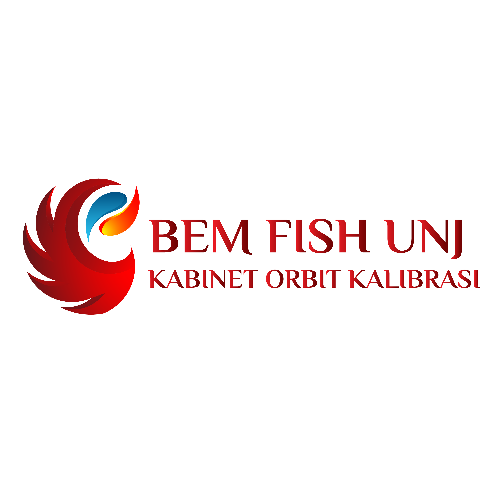

Desa Pendidikan atau yang biasa disebut dengan DEPE adalah salah satu Underbow dari Departemen Sosial dan Politik BEM FISH UNJ yang didirikan pada tahun 2012 dan berfokus pada pengabdian sosial masyarakat di bidang pendidikan.
Desa Pendidikan merupakan perwujudan nyata dari Tri Dharma Perguruan Tinggi yaitu pengabdian kepada masyarakat. Sejauh ini track record Desa Pendidikan berhasil meningkatkan minat belajar, mencapai prestasi di luar prestasi akademik, melakukan kegiatan positif, dan memberdayakan masyarakat.
Mewujudkan Desa Pendidikan sebagai wadah pengembangan bagi fungsionaris dan organisasi yang menyulut terwujudnya pendidikan berkualitas sehingga masyarakat luas mendapatkan kesetaraan dalam pendidikan dengan sistem pengajaran yang bermutu, kreatif, berkarakter, berwawasan luas dan sumber daya pengajar yang kompeten.
Mengawasi dan mengambil keputusan terkait seluruh kegiatan pengajaran dan program kerja Desa Pendidikan. Sekretaris mengelola administrasi persuratan, sementara bendahara bertanggung jawab atas penyimpanan dan pengelolaan keuangan, termasuk pembayaran kas dan atribut fungsionaris.
Divisi Minat dan Bakat adalah divisi yang berfungsi untuk membantu mengembangkan dan memberikan wadah bagi minat dan bakat adik binaan khususnya di bidang non-akademik.
Divisi Kemitraan bertugas untuk membangun dan menjaga hubungan internal antar fungsionaris. Selain itu, kemitraan menjadi pintu utama untuk menjalin kerjasama eksternal yang strategis, mutualisme, dan berkelanjutan.
Festival anak atau FESTA adalah salah satu program kerja dari Desa Pendidikan, khususnya dari Divisi Minat dan Bakat yang diselenggarakan setiap bulan Juni. Dalam acara ini, anak-anak binaan menunjukkan bakat mereka mulai dari Cerdas Cermat, Fashion Show, membaca puisi, menggambar, menyanyi, mewarnai, serta diadakan workshop membuat kerajinan tangan.
Diklat adalah suatu kegiatan dimana calon fungsionaris mendapatkan pembekalan dasar untuk menjadi pengajar sekaligus fungsionaris Desa Pendidikan. Diklat juga merupakan salah satu program kerja dari Divisi Kemitraan. Kegiatan ini mengundang narasumber yang memiliki pengalaman dalam bidang pengabdian serta dalam bidang pendidikan atau pengajaran.
©Kominfo Desa Pendidikan FISH UNJ
©Desa Pendidikan FISH UNJ 2025. All rights reserved.